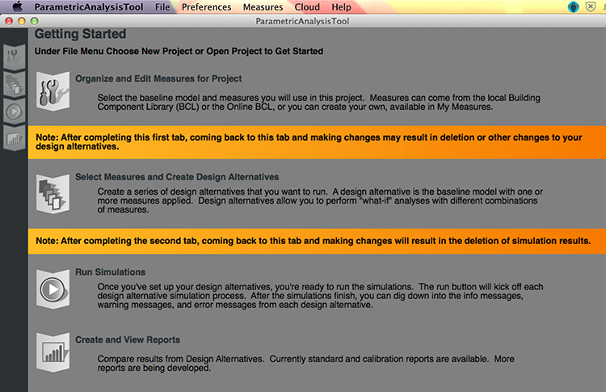
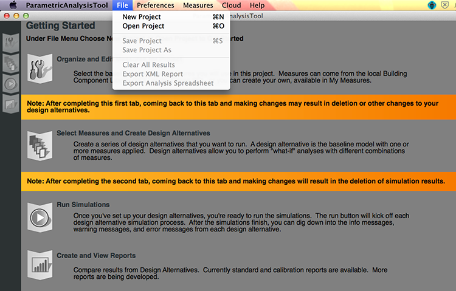
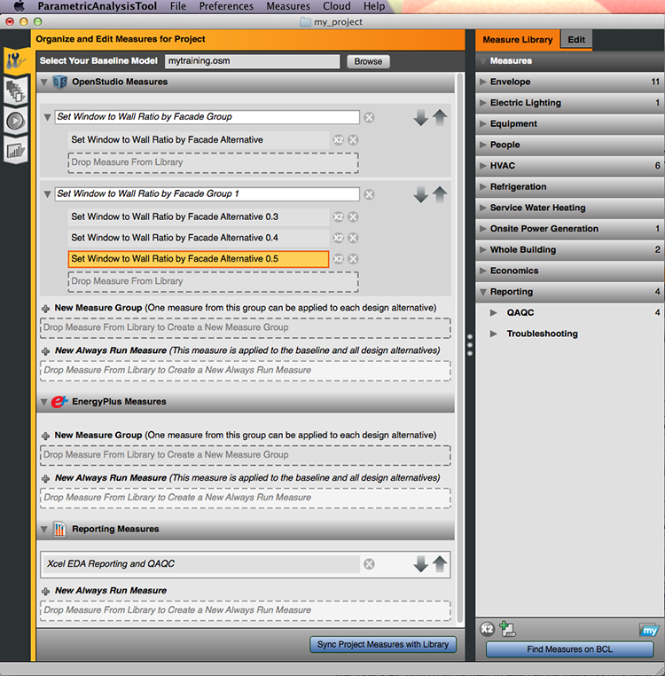
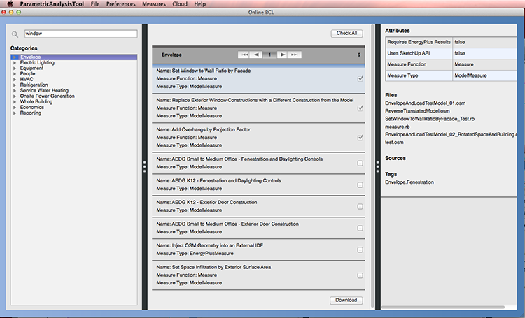
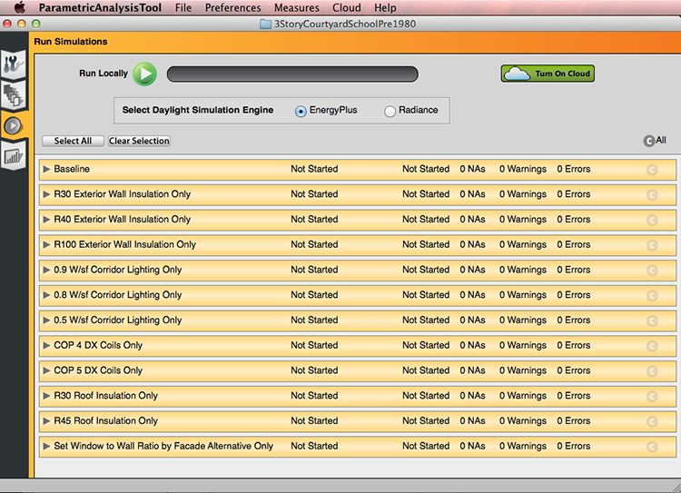
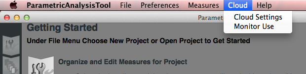
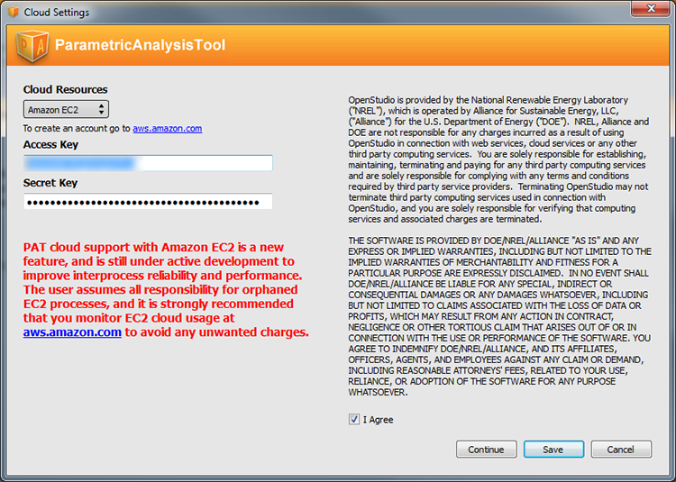
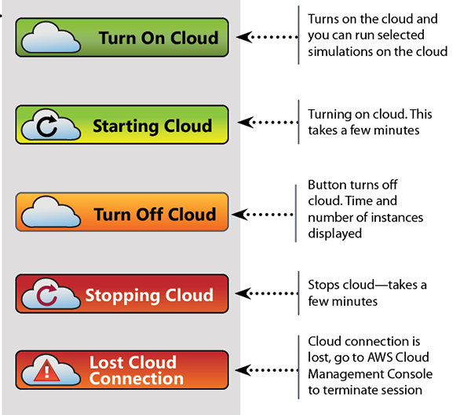
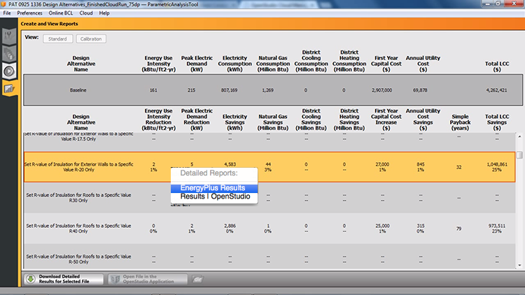

Comparative Analysis Using the ParametricAnalysisTool (PAT)
PAT removes the need to hand edit each model to try out different architecture, energy efficiency measures, and mechanical systems. PAT will apply scripts to your baseline model and let you quickly compare many alternatives. OpenStudio has developed a workflow that allows energy modelers to create and run a customized parametric analysis using commercially available cloud computing services. This workflow will enable anyone to perform powerful parametric studies in a reasonable time for a relatively low cost.
Creating a Project
The ParametricAnalysisTool Quick Start Guide (PDF) provides an introduction to the interface and workflow for creating multiple design alternative from a seed model.
When you first open PAT you will see the screen below. It shows the workflow:
- Organize and edit measures for project
- Select measures and create design alternatives
- Run simulations
- Create and view reports

Above: This is the opening screen for PAT. It gives you an overview of the workflow.
You can move through the four vertical tabs on the left navigation by working in order from top to bottom.
To Create a project use the menu item File/New Project

Above: The file menu provides new, open, save as, and other functionality.

Above: The dialog takes you to a window to save your new project.
Above: The video above shows the creation of a new project and gives a short introduction to the interface.
Loading a Baseline Model
Select your baseline model by hitting the browse button or typing in a path to your baseline OSM (Open Studio Model) file. The weather file for the file must be set on the baseline model before assigning it as the baseline in PAT.

Above: The dialog takes you to a window to save your new project.
Organize and Edit Measures for Project
To add measures to your project, drag measures from the library to the central panel.
If you want to learn more about measures check out the About Measures section.
There are three types of measures:
- OpenStudio measures are run on the OSM model before it is converted to an IDF.
- EnergyPlus measures can be run on the IDF file before it is handed to EnergyPlus.
- Reporting measures produce reports to chart results, provide quality assurance, and quality control on models.
Drag measures from the library onto a drop zone in the middle panel. You must choose the right type of measure and the way you want it applied. Choose the Always Run Measures if you want the measure to run on every design alternative. Or, choose a Measure Group for measures you do not want to run on every model. Usually measure groups contain one type of measure with different parameters, because only one measure from a measure group can be applied to each design alternative.
The measures are applied to the model in order from top to bottom. So you can reorder measure groups and always apply measures by using the gray arrows on the right.

Above: The "Set Window to Wall Ratio by Facade Group 1" contains 3 versions of the same measure with different parameter settings. The next section will show how to set measure parameters.
Check out the Measure Writing Guide on the OpenStudio Website and start writing your own custom measures.
Above: Adding measures to your project and editing the parameters
Defining Measures
You can edit the measure parameters and names by selecting the measure in the central panel. The measure will be highlighted with orange and the right panel will go to the "Edit" tab.

Above: Select a measure in the central panel and view the fields available for editing in the "Edit" panel on the right.

Above: A warning icon will be next to the measure if a required field is empty. Go to the "Edit" tab on the right panel and look for the red text.
Downloading Measures from the Building Component Library
Before you can download measures from BCL, you will need an API Key follow the instructions in the Getting Started section to get your key.
From the “Measures” menu and “Find Measures” along the top or the “Find Measures on BCL” button at the bottom of the “Library” you can access the BCL.
The "Sync Project Measures with Library" will updated any older measures in your project to the latest versions.

Above: One of the ways to access the BCL measures is through the menu.
Search for specific measures or browse through the categories.
The “Check All” button can be used to select all the measures on a page view. If you already have a measure in your library the check box will be grayed out and checked.

Above: Browse categories or search for measures to download.
You can also search and browse measures on the Building Component Library site.
Duplicating and Creating New Measures
If you can't find the measure you need you can duplicate a measure and adjust it or you can write a custom measure. Learn more about writing measures in the Measure Writing Guide

Above: Create your own measures with the features provided on the bottom of the right panel.
Hit the “New Measure” icon to open a dialog to create your own measure. Write a descriptive title, more detailed descriptions, and select the measure type and taxonomy.
Duplicating a measure opens up a similar dialog, but the name of the measure will have “copy” added at the end.
The Measure Writing Guide will guide you through this process and provide best practices.

Above: The dialog for creating your new measure is shown above.
The Modeler Description is meant to assist the energy modeler. It should explain in some detail how the measure manipulates the model and where appropriate what model objects are being added or altered. It should offer any special guidance that the measure writer wants to communicate to people using the measure.
Select Measures and Create Design Alternatives
Above: This video shows you how to create design alternatives in an OpenStudio ParametricAnalysisTool Project.
Run Simulations
Select the design alternative you want to run. Selected alternatives turn the yellow-orange. Hit the run button to start the simulations.
If you want to run a daylighting analysis with Radiance select that option here.
You must select the design alternatives you want to run before hitting the run buttons. Selected items have an orange highlight.

Above: Screenshot of the "Run" tab with design alternatives selected.
Above: Running your simulations.
Create and View Reports
Above: This video shows the simulation results of a parametric analysis and then shows you how to inspect a specific design alternative in the SketchUp Plugin.
Making Changes After an Analysis
Running on the Cloud
There are a few things to do before you click the “Turn on Cloud” button, fill out the Cloud Settings dialogs from the Cloud menu,run your baseline model locally, and then make sure you have selected all of the design alternatives that you want to run. Choosing “Select All” will select all jobs that have not already been run locally, or on a previous cloud session.
Select your baseline model, then run locally before you start the cloud to confirm that it is valid and will run properly. To do this you can deselect all other design alternatives, and then select just the baseline.

Above: Get to the Cloud Settings at any time from the "Cloud" menu.
Add information on your Amazon EC2 account and agree to the terms on the first screen. Get an Amazon EC2 account and learn more about using Amazon cloud at aws.amazon.com. Use the AWS Console to monitor your account charges. Not monitoring your account carefully can result in unexpected charges.
Currently only Amazon EC2 is available through PAT.

Above: Fill out the first screen and agree to terms before continuing to the second screen.
On the second screen of the “Cloud Settings” dialog, confirm that you have chosen the desired sever, worker, and number of workers.
As soon as you hit the “Turn on Cloud” button you will start incurring charges, and the smallest increment is one hour. If you have to cancel and re-start it you will be charged again.
Review Amazon pricing at http://aws.amazon.com/ec2/pricing/.

Above: Fill out the first screen and agree to terms before continuing to the second screen.
Above: The video above demonstrates running simulations on the cloud.
The “Monitor Use” dialog under the Cloud menu will show you how many instances you have in your current project as well as other projects. If your “Total Instances Running” is more than 0, and you don’t know why, you can go to the EC2 Console website to terminate them. The “Estimated EC2 Charges” value is directly from Amazon, but may be up to 24 hours delayed. As a result you won’t see this change on the fly as you are working on a project, you will typically see it the next day.

Above: Open this dialog from the "Cloud" menu.
The "Turn on the Cloud" button has several states to let you know the status of the cloud.

Above: The states of the cloud button are shown.
You can download standard or detailed results from your runs. If you want detailed results click on the download button in the table. You can choose to download all of the results in detail but it may be a large download.

Above: The states of the cloud download button are shown.
While your project is running on the cloud you can choose the design alternative and select “Download Detailed Results for Selected File” button if you want more detailed data on some of the options.
Quitting PAT while the cloud is on will not close the EC2 instances. If you Launch PAT again but open a different project it may look like the cloud is off, but that is only relevant for that current project.
To properly end the cloud session in PAT re-open the PAT project (if you have closed it) and then click the button to stop the cloud. For a few minutes you will see “Stopping Cloud."
Once you stop the cloud you will no longer be able to download detailed simulation results. If this happens and you want to get one, you can always run that job locally. It is generally not recommended to download detailed results for all design alternatives, as that will use a lot of hard drive space and network bandwidth.
It is always a good idea to go to the EC2 website to confirm that the instances have shut down. To view your EC2 web console, click the “Manage all Projects with AWS Console” in the “Monitor Use” dialog or “AWS Management Console” in the “Cloud Settings” dialog. It will take you to this address http://aws.amazon.com/console/. Click “Sign in to the AWS Console”

Above: Check your status on AWS and terminate sessions if you have problems in PAT.
OpenStudio Cloud Management Console
While your runs are completing on the cloud and after they are finished you can explore your results with the OpenStudio Cloud Management Console.

Above: This pie chart shows the progress of the runs. Select "View Analysis" to explore results.

*Above: The red boxes added to the screenshot above shows where you can select charts and download results in different formats:
- List of Measures
- List of Variables
- View Parallel Coordinates Plot
- View Scatter Plot
- View XY Plot
- Interactive XY Plot
- Download CSV
- Download R Data Frame
- Debug Log
Viewing Results
You can open individual design alternative reports (.htm files) in your browser. EnergyPlus and standard and calibration OpenStudio reports can be found by right clicking on a design alternative, on the Results tab, and selecting the results you want to view.

Above: Right click on design alternative to get these options. If your model includes calibration reports the calibration button at the top of the results will display those in a table format in the application.
Publications
OpenStudio is developed in collaboration by NREL, ANL, LBNL, ORNL, and PNNL.
NREL is a National Laboratory of the U.S. Department of Energy, Office of Energy Efficiency and Renewable Energy, operated by the Alliance for Sustainable Energy, LLC.